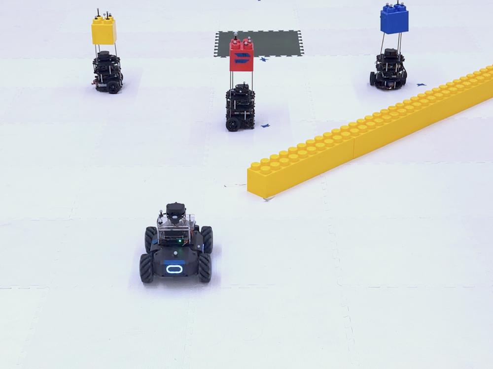
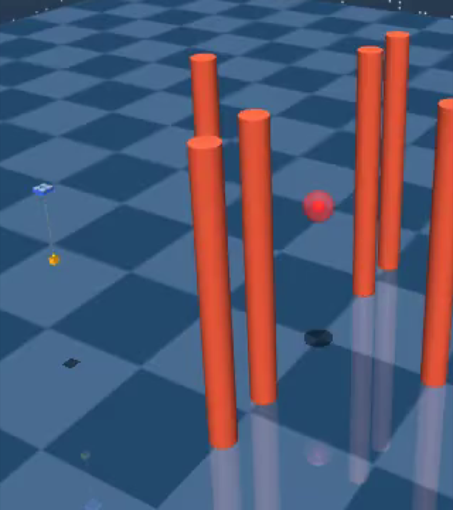
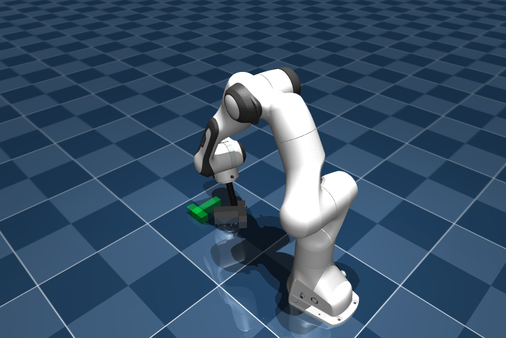
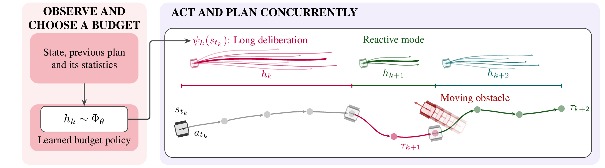
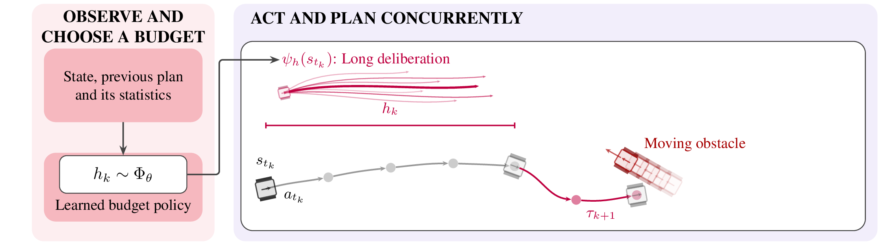
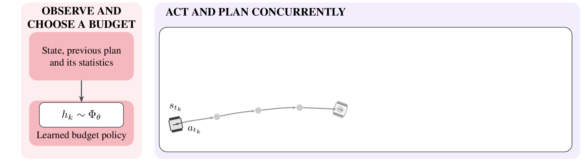
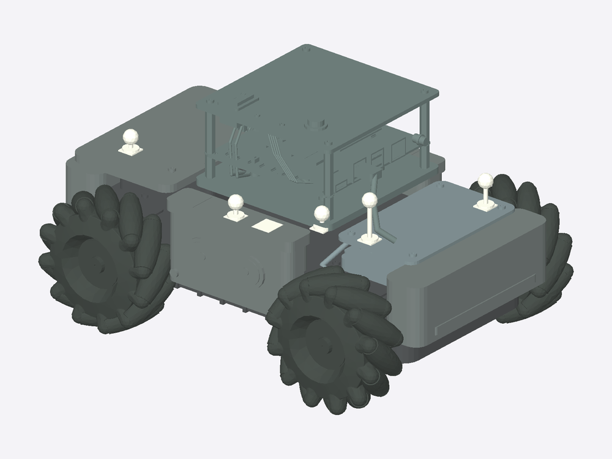

Observe
Combine the current state, executing plan, previous duration, and the solver’s statistics.
ICRA 2027 · Anonymous submission
Adaptive Computation Budgets for Real-Time Control
A robot must decide how to act—and how long to think.
We learn to balance deliberation and feedback while the world keeps moving.



Abstract
Planning while moving creates a trade-off: a longer action commitment gives the planner more time to compute, but delays feedback. We cast this shared execution and computation budget as a semi-Markov decision process and learn a policy conditioned on the robot state, the current plan, and inexpensive planner statistics. Across ground navigation, cable-payload flight, and contact-rich manipulation, the policy learns when longer deliberation helps and when earlier feedback matters—outperforming fixed budgets where adaptation is useful and matching a strong fixed budget where it is not.
01 / Method
The duration hk determines both how long the robot executes its current plan and how much time the solver has to compute the next one.



At tk+1 = tk + hk, observe again and hand off the new plan. Illustration; the slider does not run the learned policy.
Combine the current state, executing plan, previous duration, and the solver’s statistics.
The learned policy selects a duration. Longer commitments allow more solver resources while extending open-loop execution.
Execute the current plan while computing its successor. Refresh the context at the next decision epoch.
We train the budget policy with PPO over decision epochs, keeping the low-level solver fixed. Rewards accumulate over each action chunk, and bootstrapping uses the duration-aware discount γh. This preserves the underlying control objective while allowing the interval between decisions to change. Our experiments use sampling-based MPPI or CEM planners.
02 / Planner statistics
Three inexpensive signals describe the search, its feasibility margin, and the reliability of its model. They use existing rollouts and execution feedback, with no extra planner call.
Animated illustrations, not recorded measurements. The policy learns to interpret these signals together with the state and plan.
Are a few rollouts dominating the update, or do many contribute comparably?
ESS = 1 / (K Σᵢ wᵢ²)
Low ESS means concentrated weights. High ESS can reflect a flat cost landscape or search that has contracted around a solution; it does not by itself certify a good plan.
How many predicted steps remain before a rollout leaves the feasible set?
First step outside 𝒞
This measures the plan’s remaining feasibility margin. A nearby constraint violation is relevant to how long the robot can commit before receiving fresh feedback.
How far has the observed world moved from the planner’s prediction?
Mean positional displacement
We compare predicted and realised positions of objects intersecting the rollout tube. The displacement gives the policy an online signal of model reliability.
03 / Results
Dynamic obstacles, stiff flight dynamics, and changing contacts stress the computation–reactivity trade-off in different ways.
98.7%
Versus 76.0% for the best fixed commitment by pooled success rate (h = 5), across 300 evaluation episodes.
80%
The learned policy completes both goals in 80% of trials. Every evaluated fixed commitment fails the full task.
0.65 cm
The policy settles on h = 8 and matches the best fixed budget by mean terminal position error.
0.65 ± 0.48 cm
Mean ± sample standard deviation
16 matched episodes · 600 steps
On the RoboMaster, the policy reduces commitment while passing a crossing robot and navigating a tight passage. In cable-payload flight, it allocates longer budgets during transit and shorter commitments near targets. In nominal Push-T, exact dynamics, full observation, and no disturbances leave little incentive to adapt.

Physical deployment
We deploy on the Cambridge RoboMaster platform (Blumenkamp et al., 2024), shown here using a STEP reconstruction of its chassis, mecanum wheels, raised compute assembly, and tracking markers. Transfer retains the learned budget policy and budget-to-planner mapping; motion-capture state and the ROS 2 control stack replace simulated sensing and execution. The similar budget patterns observed in simulation and hardware suggest a small gap for this navigation task. The CAD reconstruction visualises the hardware geometry; planning retains the navigation dynamics model.
Planning and execution run in separate ROS 2 processes. The navigation control timer is set to 100 ms, so a commitment of h steps targets a window of h × 100 ms. The planner uses a 10 ms request-polling timer, using the state snapshot and active trajectory captured at the window’s start. The mission buffers the result and switches at the selected action index. If computation runs late, it continues along the current trajectory’s remaining actions and logs the missed deadline; exhausting that trajectory triggers a final hold and termination. Timing events record the request, solve, receipt, and action issue times so computation and communication delays can be inspected separately.
Platform reference: J. Blumenkamp, A. Shankar, M. Bettini, J. Bird, and A. Prorok. The Cambridge RoboMaster: An Agile Multi-Robot Research Platform. DARS, 2024.
Download supplementary video ↗MP4 · 19.5 MB
04 / Conclusion
Computation has a physical cost: while the solver deliberates, the robot continues executing an ageing plan. Learning the shared budget lets a robot adapt this trade-off to its current situation. Planner statistics help reveal when more search is useful and when earlier feedback matters. The benefit depends on exploitable variation in the task; a constant budget can still be the right outcome.
05 / Outlook
Future work will explore richer representations and more expressive planning systems.
Go beyond compact summaries to capture more of the structure in the planner’s search.
Study adaptive computation when the robot’s predictive model is itself learned.
Extend the framework to planning algorithms with a broader range of computational choices.